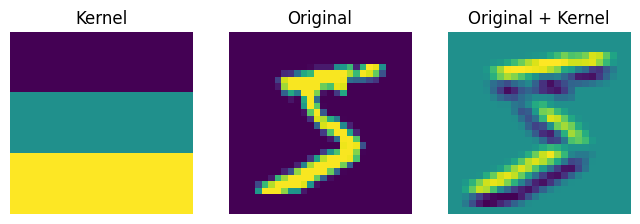
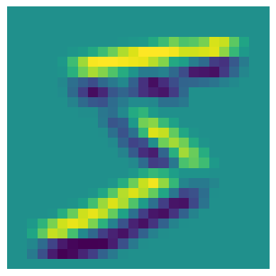
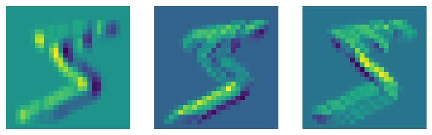

dsd = load_dataset("mnist")
trn, tst = dsd["train"], dsd["test"]
xb = T.to_tensor(trn[0]["image"])[None, ...]
xb.shapetorch.Size([1, 1, 28, 28])Adapted from: - https://youtu.be/0Hi2r4CaHvk?si=Adfv4DL1LfoNr0nC
dsd = load_dataset("mnist")
trn, tst = dsd["train"], dsd["test"]
xb = T.to_tensor(trn[0]["image"])[None, ...]
xb.shapetorch.Size([1, 1, 28, 28])More info: https://medium.com/impactai/cnns-from-different-viewpoints-fab7f52d159c
Convolutions encode position equivariance like the probability that there is a bird at any particular location in an image. It’s implemented as a sliding matrix multiplication, followed by a sum.
like so:
kernel = tensor([[-1, -1, -1], [0, 0, 0], [1, 1, 1]])
def apply_kernel(row, col, img, kernel):
# TODO: normally, you would need to check if the kernel has
# an odd or even size
width, height = kernel.shape
receptive_field = img[
row - (height // 2) : row + (height // 2) + 1,
col - (width // 2) : col + (width // 2) + 1,
]
return (receptive_field * kernel).sum()
*_, w, h = xb.shape
processed = [
[apply_kernel(i, j, xb.squeeze(), kernel) for j in range(1, w - 1)]
for i in range(1, h - 1)
]
processed = tensor(processed)
show_images(
[kernel, xb.squeeze(), processed],
titles=["Kernel", "Original", "Original + Kernel"],
figsize=(8, 8),
);
You can see it is very easy to think of interesting features of images that are just convolutional filters.
One clever way of implementing this is the im2col algorithm that represents a convolution as a matrix multiplication and take advantage of highly efficient algorithms for matrix multiplications. It does so by unrolling the input matrix matrix such that every receptive field is a contiguous block of values, with a correspondingly unrolled contiguous block of convolutional filter values. The values of the convolutional matrix can change, but they are shared.
This has a corresponding function in PyTorch.
Signature: F.unfold( input: torch.Tensor, kernel_size: None, dilation: None = 1, padding: None = 0, stride: None = 1, ) -> torch.Tensor Docstring: Extracts sliding local blocks from a batched input tensor. .. warning:: Currently, only 4-D input tensors (batched image-like tensors) are supported. .. warning:: More than one element of the unfolded tensor may refer to a single memory location. As a result, in-place operations (especially ones that are vectorized) may result in incorrect behavior. If you need to write to the tensor, please clone it first. See :class:`torch.nn.Unfold` for details File: ~/micromamba/envs/slowai/lib/python3.11/site-packages/torch/nn/functional.py Type: function
# Need to add a channel dimension and a batch dimension
xb_unfolded = F.unfold(xb, kernel_size=(3, 3)).float()
kernel_unfolded = kernel.view(-1).float()
# im2col
xb_processed = kernel_unfolded @ xb_unfolded
# Reshape
xb_processed = xb_processed.view(26, 26)
show_image(xb_processed);
This unfold trick is about the same efficiency as the built-in convolution layer.
For better performance, we can apply a bunch of convolutions simultaneously.
diag1_edge = tensor([[0, -1, 1], [-1, 1, 0], [1, 0, 0]]).float()
diag2_edge = tensor([[1, -1, 0], [0, 1, -1], [0, 0, 1]]).float()
left_edge = tensor([[-1, 0, 1], [-1, 0, 1], [-1, 0, 1]]).float()
edge_kernels = torch.stack([left_edge, diag1_edge, diag2_edge])
edge_kernels.shapetorch.Size([3, 3, 3])batch_features = F.conv2d(xb, edge_kernels[:, None, ...])
show_images([batch_features[0, i] for i in range(3)])
The parameters to a convolutional layer are the stride and padding, which allow us to manipulate the size of the feature map.
For classifying digits, we cannot solely use convolutional layers because it gives 10 outputs per pixel!
nh, n_outputs = 30, 10
partial_model = torch.nn.Sequential(
torch.nn.Conv2d(1, 30, kernel_size=3, padding=1),
torch.nn.ReLU(),
torch.nn.Conv2d(30, 10, kernel_size=3, padding=1),
)
partial_model(xb).shapetorch.Size([1, 10, 28, 28])Instead, we’ll add a lot of layers and chew up the extra feature map dimensions until we have a 1x1x10 feature map.
We’ll add a convenience function to create conv layers with optional activations.
conv (ni, nf, ks=3, stride=2, act=True)
We also need some annoying device stuff.
to_device (x, device='cuda')
Now, define the model…
Note here that the default stride is 2, such that the feature map is downsampled by 2 each layer.
get_model ()
And we can train! 🏋️
get_dls_from_dataset_dict (dsd, collate_fn=<function default_collate>, bs=32)
fit (epochs, model, loss_func, opt, train_dl, valid_dl, tqdm_=False)
accuracy (y, y_pred)
fashion_mnist (bs=256)
fashion_collate (examples)
model = get_model()
with fashion_mnist() as dls:
fit(6, model, F.cross_entropy, optim.SGD(model.parameters(), lr=0.1), *dls)epoch=0, validation loss=1.041, validation accuracy=0.62
epoch=1, validation loss=0.767, validation accuracy=0.73
epoch=2, validation loss=0.623, validation accuracy=0.78
epoch=3, validation loss=0.561, validation accuracy=0.80
epoch=4, validation loss=0.515, validation accuracy=0.81
epoch=5, validation loss=0.483, validation accuracy=0.82This gives us comparable accuracy to the linear model, which had 39,760 parameters. In contrast…
More tips: